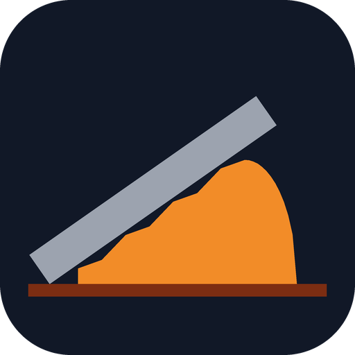
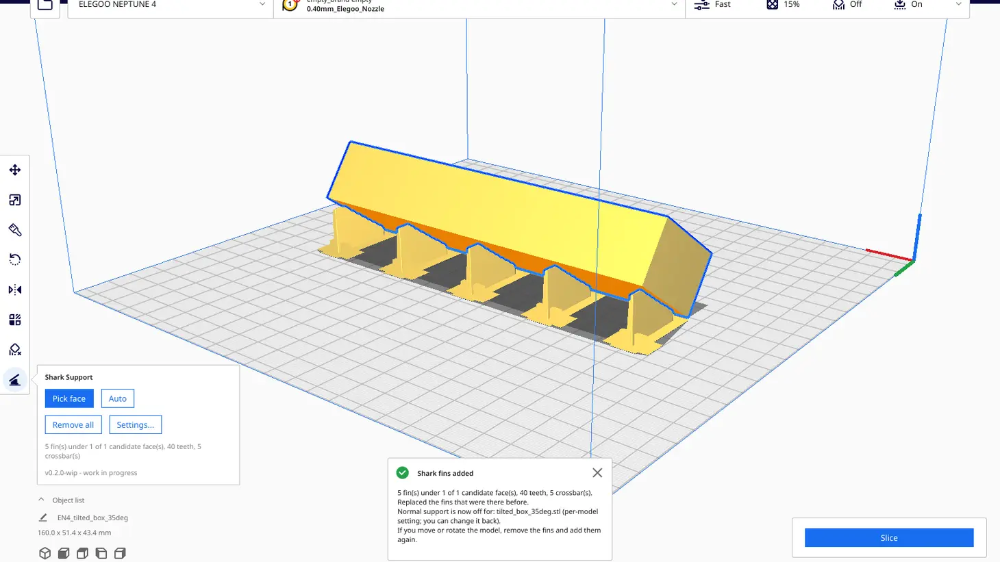
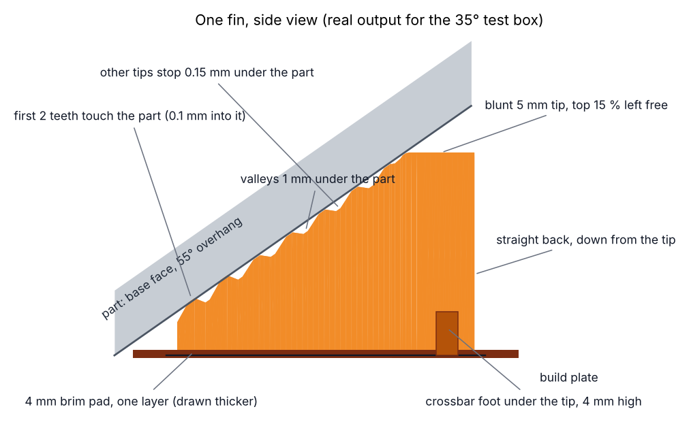
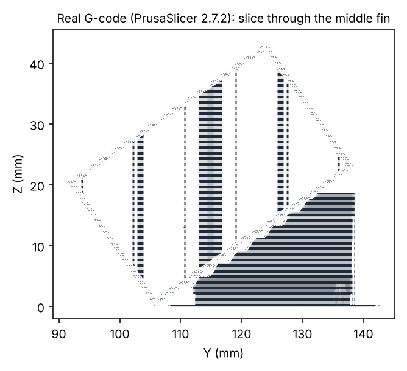
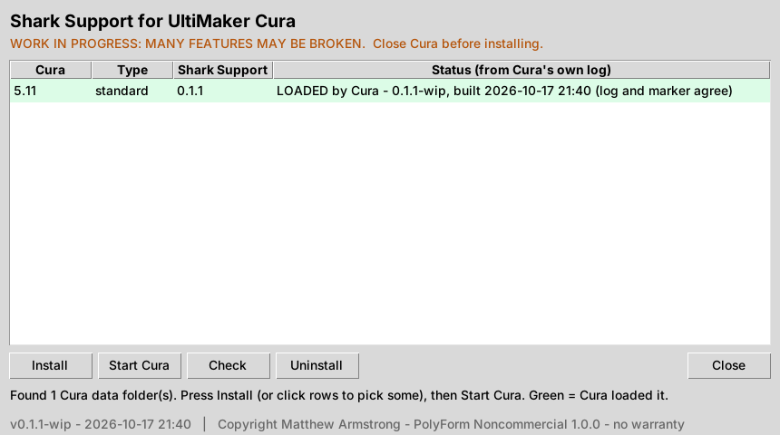

Shark Support
for UltiMaker Cura · Source-available · Non-commercial
Long flat overhangs from tilted prints get a row of thin fins that follow the slope, touch the part only at small teeth, and stand on a crossbar foot and a 4 mm brim pad. Pick the face with the mouse in Cura, or let Auto find them.

The plugin inside Cura (run from Cura's source in testing, see the README) with fins under the 35° test box.
What it does
Pick or Auto
A shark-fin button in Cura's left toolbar: click the underside face to support, or Auto for every big tilted flat face.
Follows the slope
Fins run downhill under each face, measured by raycasts from the bed, tapering from 2.4 to 1.2 mm.
Point contact
Teeth every 3 mm from the very first millimetre. The first two touch the part to hold the start of the overhang; the rest stop 0.15 mm short, so it snaps off.
Stands up
Stops at 85 % with a blunt 5 mm flat top and a straight back: no tiny slow top layers. Crossbar foot and a one-layer 4 mm brim pad.
Any slicer
A command line tool writes the fins as an STL for PrusaSlicer, OrcaSlicer or anything else.
Checks itself
A self-check in Cura, and an installer that waits for Cura's own log to say the plugin loaded.
How one fin looks

Drawn from the real output for the test box.

Real G-code from PrusaSlicer 2.7.2 through the same fin.
Install
- Download and unzip the source (or the release).
- Close Cura.
- Double-click
Install-Linux.sh,Install-Windows.batorInstall-Mac.command. - Press Install, then Start Cura. The row goes green when Cura has loaded it.
- In Cura: select your tilted model, click the shark-fin button in the left toolbar, then Pick face and click the underside, or Auto.
Or drag the .curapackage from the release onto Cura and restart it.

The research paper
Fin-ally Supported: shark-fin supports for long, flat, tilted overhangs. The method in full, every mistake on the way, the numbers, a test plan, and a defensive disclosure that keeps the method free for everyone. Infant sharks do, do, do support prints well.
What does not exist yet
| Not yet | Note |
|---|---|
| Curved or organic undersides | Only flat faces are found. |
| Fins that follow a moved model | Remove and add again after moving. |
| Painting where on a face fins go | Whole faces are picked. |
| A real print test | Geometry, Cura (from source) and PrusaSlicer slicing were tested; no print yet. |
| Windows and Mac testing | Launchers written but not run. |